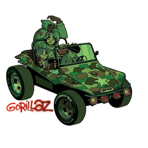

Обложки альбомов и синглов

Альбом "Gorillaz"
Альбом "The Now Now"

Альбом "Demon Days"
— британская виртуальная группа, созданная в 1998 году Деймоном Албарном и Джейми Хьюлеттом. Проект включает в себя обширную вымышленную вселенную, окружающую саму «виртуальную группу», состоящую из четырёх анимационных участников: 2-D (вокалист, клавишные), Мёрдока Никкалса (лидер, бас-гитара, драм-машина), Нудл (гитара, мелодика, вокал) и Рассела Хоббса (ударные, перкуссия).
Дебютный одноимённый альбом группы разошёлся в размере семи миллионов копий, что позволило коллективу войти в Книгу рекордов Гиннесса как «Самая успешная виртуальная группа». В 2001 году Gorillaz были номинированы на премию Mercury Prize, но позже их исключили из списка по их же просьбе. Второй студийный альбом, озаглавленный Demon Days и выпущенный в 2005 году, пять раз получил статус платинового в Великобритании, два в США и выиграл пять номинаций на Грэмми в 2006 году, одна из которых была в категории «Лучшее совместное вокальное поп-исполнение». Кроме этого, группа завоевала множество других наград, включая две на MTV Video Music Awards, одну на NME Awards, три на MTV Europe Music Awards, и была номинирована в девяти категориях BRIT Awards. К 2007 году продажи альбомов Gorillaz и Demon Days превысили отметку в 15 миллионов. Plastic Beach, третий студийный альбом группы, был выпущен в марте 2010 года. В декабре того же года был выпущен альбом The Fall. В 2017 году после пятилетнего перерыва Gorillaz анонсировали свой пятый студийный альбом Humanz. Их шестой студийный альбом The Now Now вышел 29 июня 2018 года. В этом же году они были номинированы на 11 наград Brit Awards и стали лучшей британской группой.
Альбом "Gorillaz"
Альбом "The Now Now"
Альбом "Demon Days"